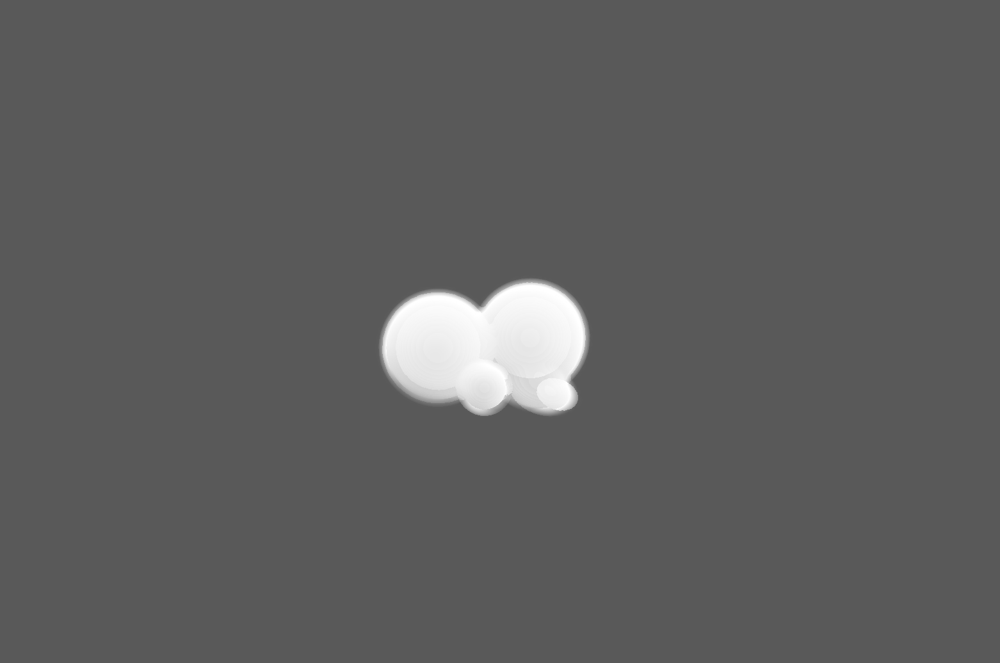
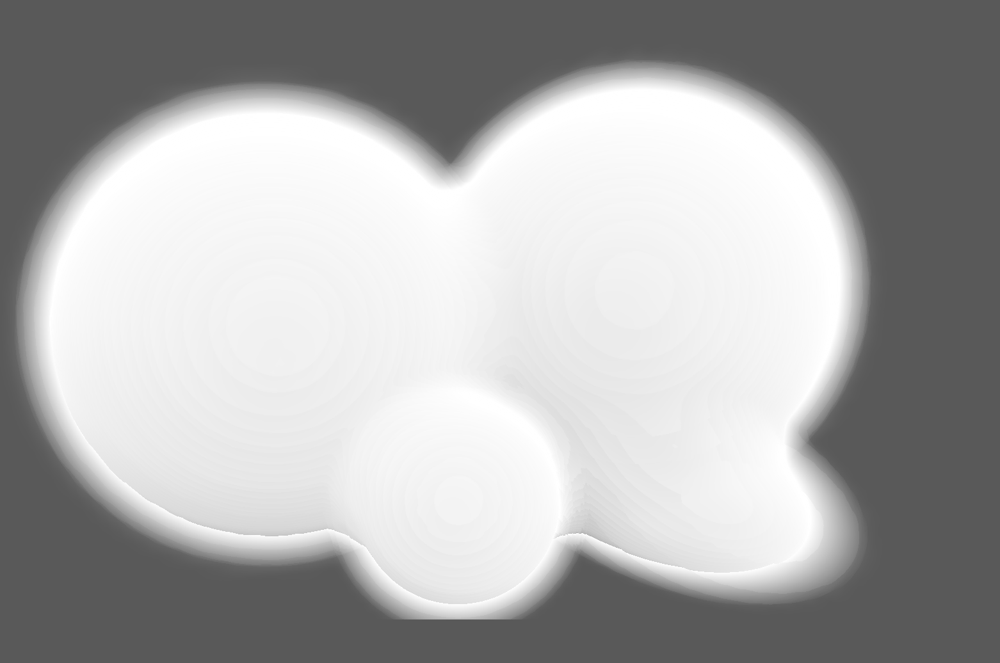
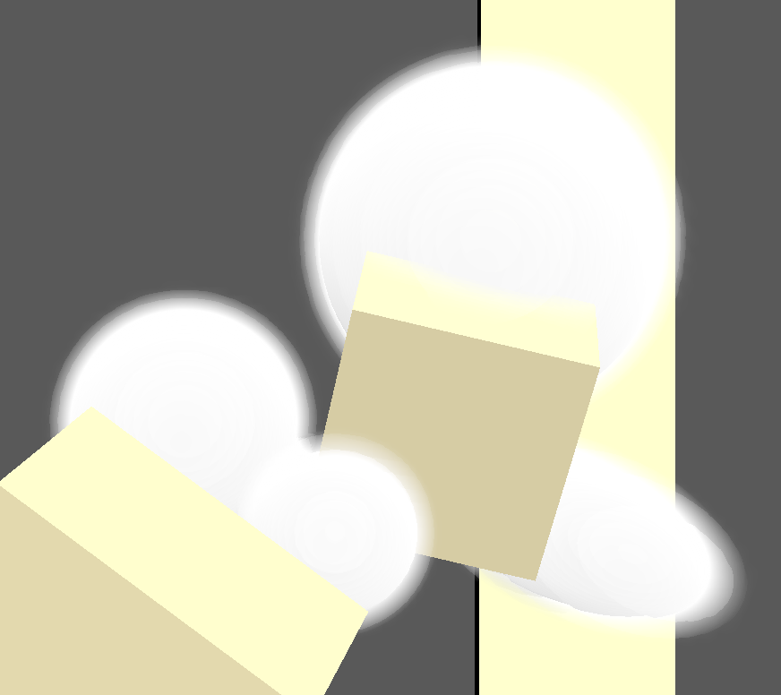
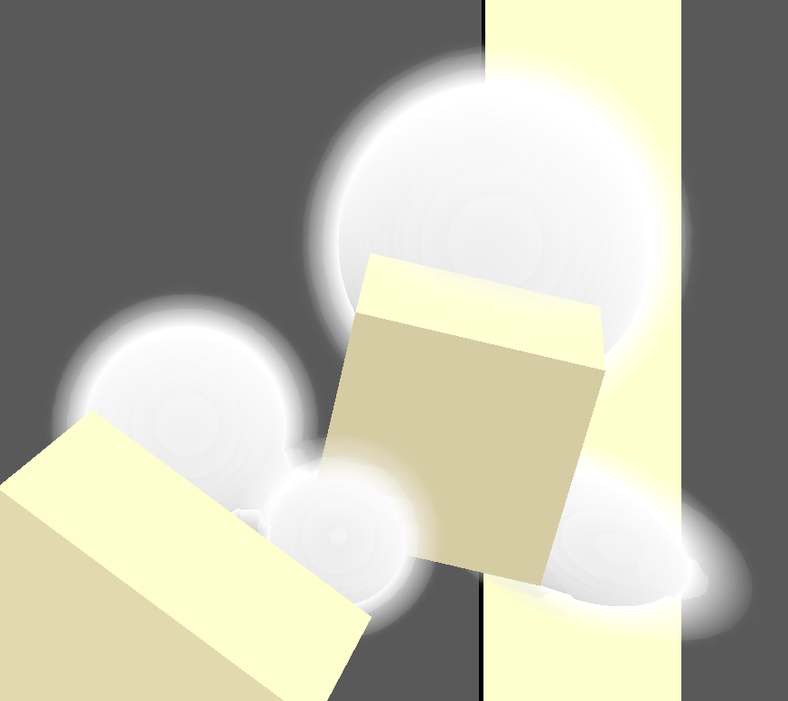
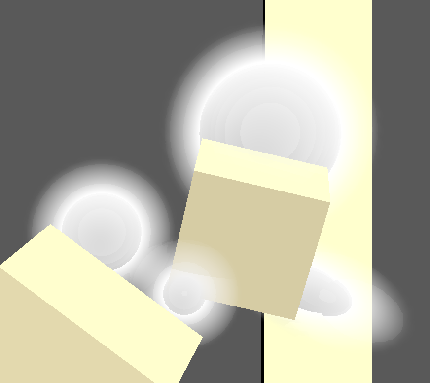
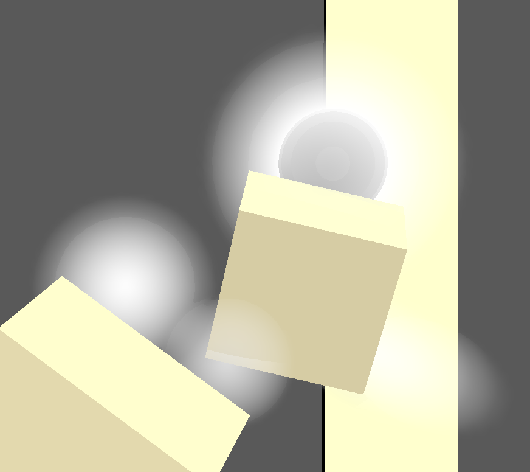
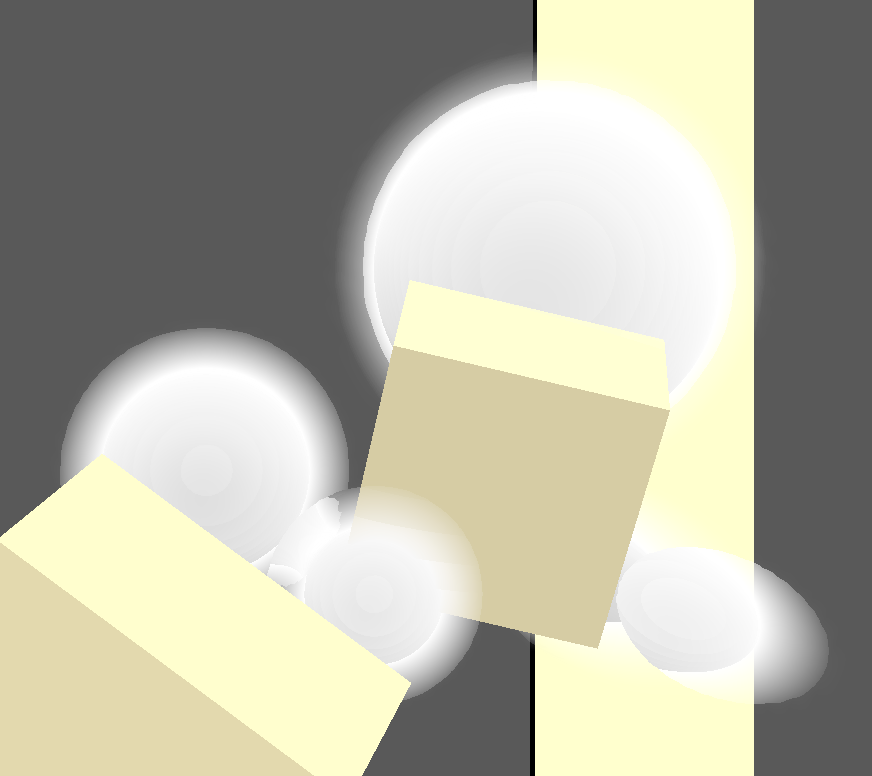
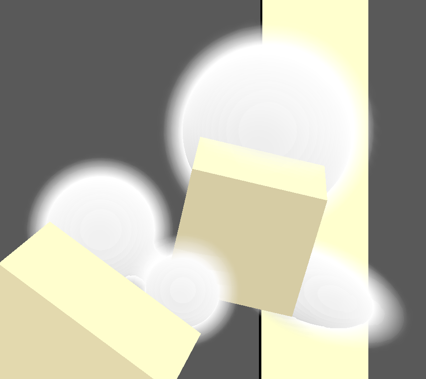

This project tries to implement a cloud renderer in the spirit of Nubis, however with a particular focus in rendering meshes as clouds, rather than generating cloudscapes.
The current implementation hardcodes a spherical density field in object space. Objects in the scene labelled with the cloud material are diverted away from the objects pipeline, and instead their transform is used to determine the transform of the spherical density field that later becomes the cloud being rendered.
The cloud renderer is implemented as a post-processing shader, and the shader module itself is run as a subpass in the main render pass, after the other scene objects are drawn.
In the full implementation, one should be able to turn any mesh into a signed distance / density field. The viewer should also ideally precompute a unified density field for the entire scene to reduce shader workload.
In terms of shader implementation, the current implementation is lacking up-rezing of the density field using 3D noise, and only very basic direct lighting from a single directional light is implemented. The lighting computations are also using the more inefficient secondary raymarch used in earlier Nubis versions rather than the new approach that precomputes certain lighting calculations in voxel grids.
I created a simple scene to showcase the cloud material, as well as how clouds are properly occluded by other scene geometry.
The blender export script was slightly modified to detect materials whose name begin with "cloud", and a new brdf option was added
in S72::Material to store this information.
The following are the information stored in descriptor sets that are passed to the shader:
The cloud shader is set up as a subpass in the main render pass i.e. now the main render pass contains subpass 0 which renders background, lines and objects, and subpass 1 which renders clouds.
Subpass 1 shares the same color attachment as subpass 0. The blend parameters in VkPipelineColorBlendAttachmentState
were modified in the clouds pipeline to allow the pipeline to modify the output of subpass 0.
Subpass dependencies are added in an attempt to ensure subpass 1 only reads from the depth buffer and modifies the color attachment after subpass 0 finishes modifying the two.
Within the post-processing shader, each fragment corresponds to a raymarch from the camera through the screen pixel. For each step along the ray:
step_size = near_step_size + far_step_size_offset * distance_from_camera / step_adjustment_distance, though I stuck with near_step_size when we're still
within a cloud
In hindsight I realise I probably implemented quite a few things wrongly, but I ran out of time in the semester to fix them.
I conducted 3 different benchmark tests.
I manually generated the benchmark scenes by duplicating the cloud objects in blender, since I worry simply duplicating the nodes in s72 might not
accurately reflect a standard scene since there is some early stopping logic in the shader depending on accumulated density. The corresponding s72 files
are cloud.s72 and cloud_8.s72 through cloud_64.s72.
To observe the effect of adaptive step size, I created two scenes that contain the same cloud instances, but one has the clouds close to the camera such that
the instances cover most of the screen, while the other has the clouds much further away. I collect frame times while using constant step size and
adaptive step size respectively in both scenes. The s72 files used are cloud_small.s72 and cloud_big.s72.


cloud_small.s72 Right: cloud_big.s72
cloud.s72 was rendered while varying the parameters involved in computing the adaptive step size, namely
near_step_size, far_step_size_offset and step_adjustment_distance. The baseline
render uses the values 0.2, 20 and 1000 respectively. While testing the effects of each parameter, the other parameters are fixed
at their baseline values while the parameter of concern is varied.
Below I show the frame time plots and corresponding render outputs.







